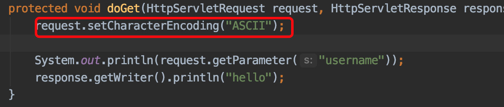
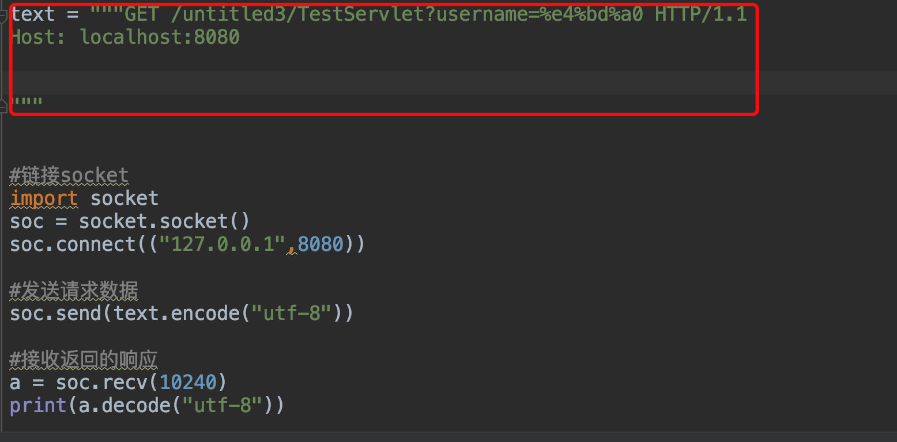
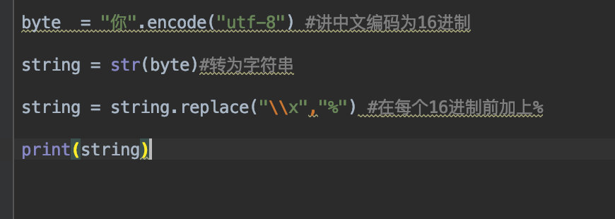
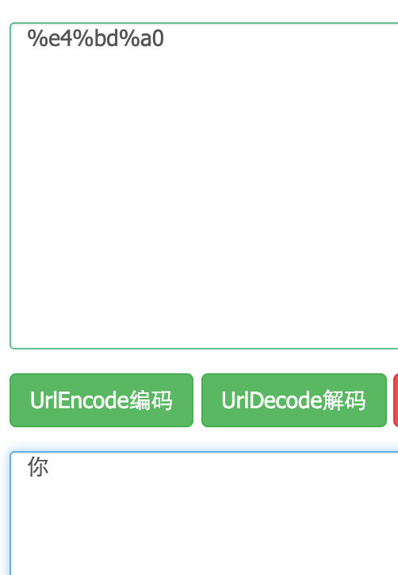
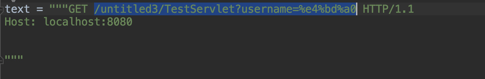
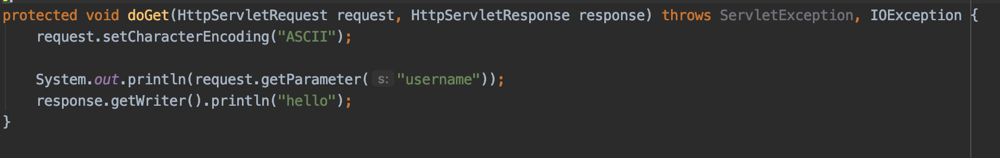
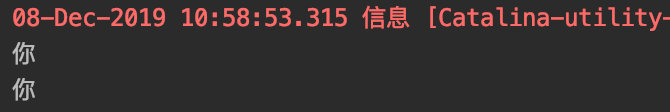
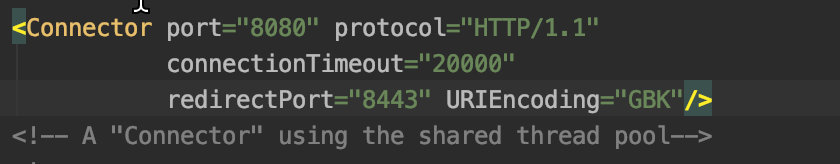

老生常谈之HTTP乱码问题
对于get请求 在Servlet中调用request.setCharacterEncoding()设置编码是没有意义的不管你使用任何编码方式对于你的数据解码没有任何影响

问题的引出,在tomcat9之后,不管你在setCharacterEncoding()设置什么编码都不会乱码,哪怕是最基础的ACSII,那有人就说了,那不挺好的,不乱吗就行了呗;
没办法,我喜欢问自己为什么,凭什么不乱吗,那设置这个编码有什么意义?
网上找了一下,只有问为什么乱码,没人问为啥不乱码,总有人会说设置编码要放在获取参数前,诸如此类,说的一套一套,人云亦云!
带着这个问题我写了一个简单的socket程序 目的就是想服务器发送一个HTTP请求手动控制编码环节,
第一次测试,直接把中文写在url中,最后用utf-8来发送给服务器

服务器返回400请求解析失败
Invalid character found in the request target. The valid characters are defined in RFC 7230 and RFC 3986这啥玩意?,原来RFC 3986中规定URL中只允许包含24个英文字母以及基本的字符,中文编码后其对应的二进制超过了规定返回导致报错,这一点很重要
这导致了我们在URL中不能传递中文参数,那不行,得解决这个问题,于是就出现了URLEncoding
我们想要在url中包含中文,就必须先把中文转换为基本的字符,其原理是字符转为16进制的字符然后在每个字节前加一个%,就像下面这样

结果:%e4%bd%a0
把这个字符拿到网页中URL解码

没问题
注意这里数据依然是字符串格式的,要想通过socket发送则必须在进行编码,例如我们要请求的地址为/untitled3/TestServlet?username=你
我们先要使用URLEncoding将你转为符合RFC 3986要求的字符串,替换到原本的位置去
处理过的地址为/untitled3/TestServlet?username=%e4%bd%a0
然后在把URL放到我们的HTTP请求报文中

服务器端doGet方法

解析成功

ok服务器已经成功解析了中文但是注意我在服务器端指定的编码为ASCII,这也是我要解决的主要问题,
客户端发送请求时数据一共经过了两次编码,
那么我们服务器端执行的这个setCharacterEncoding是用在那一次呢?
没错就是第一次,这就是为什么我们无论设置那种编码都不会导致乱码的原因了,
决定是否乱码的核心在第二次,在上面的例子中服务器先是用ASCII来解析http整个数据包,其中的的URL为/untitled3/TestServlet?username=%e4%bd%a0
对于这个URL而言任何编码表都能解析,不会乱码,接下里就需要将里面的参数部分(问号后面的)拿出来进行反向URLEncoding,此时的反向解析就是最重要的要从字符串中提取16进制数据,在通过编码表进行解码 ,
而tomcat9中默认的解码方式为UTF-8,到这里你应该明白了,为什么不乱吗?
简单的说:对于get请求而言,调用setCharacterEncoding是没有任何意义的,如果我们要控制URLEncoding的解码方式,必须通过server.xml来修改

在啰嗦一下,对于post请求,我们的数据是包含在请求体中的所以,上面的配置对于post请求没有效果,那如果请求体中包含了中文怎么办,很简单只要与客户端保持相同的解码方式即可,使用request.setCharacterEncoding方法来设置,
还有问题,为什么post就可以呢? 因为RFC 3986只是说URL中的字符字节必须在某个范围内,没有限制请求体中的数据范围,所以对于请求体,你爱放中就放中文,
你也可以这么理解request.setCharacterEncoding只是用来设置请求体的解码方式,对于url中的参数解码方式就必须同 server.xml来配置
另外对于post服务器其实可以不设置编码只要客户端post请求头的ContentType中声明了编码即可,这也侧面印证了post才是用来给服务器传递数据的更优方法,
那为什么大家喜欢用get呢?不知道,或许是因为简单?,累了就到这里吧
补充下1楼的解决乱码方案也是可以的
其原理是将使用错误码表解码的结果还原为二进制，再用正确码表重新解码
当然你不管用哪种方式都必须与对方采用相同的编码方式
只要理解了其中原理，那乱码问题也就迎刃而解了